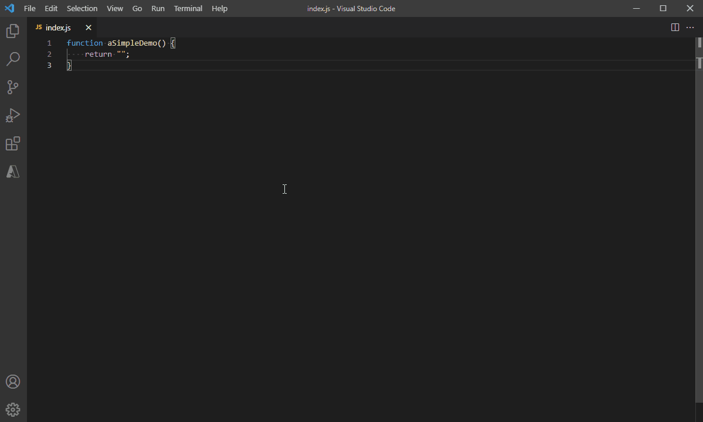

Record as you type your code and share that exact moment to the
world. Here it is in action:
Installation
Add the
recorder
extension
to
VSCode.
Usage
Quick Demo

Step-by-step
- Open the command palette (Ctrl+Shift+P on Windows and Linux, Cmd+Shift+P on OS X) and search for
RotoscodeJS.
- Click on the Start Recording button then wait for the countdown timer to wind down.
- Update your code however you like (RotoscodeJS will capture every change).
- Click on the Stop Recording button to end the recording session.
- A preview of the recording will be displayed which can be played again from the beginning.
- Click on the Copy Code to copy the embed code to the clipboard.
- Paste the embed code to your webpage.
It's Open Source!